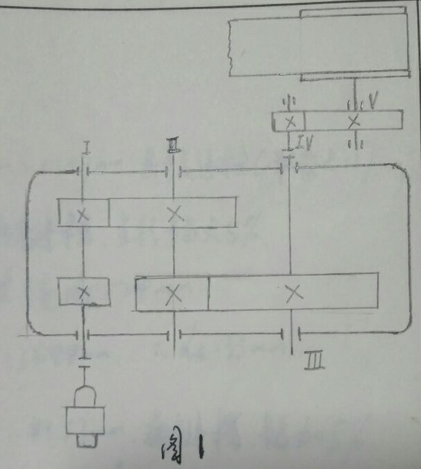
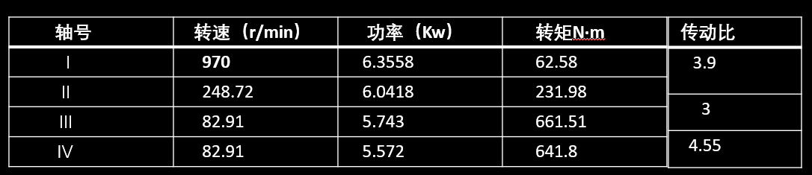
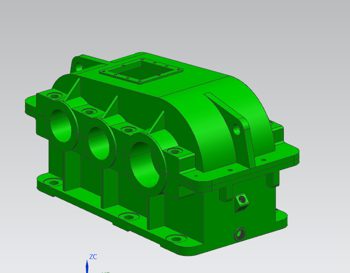
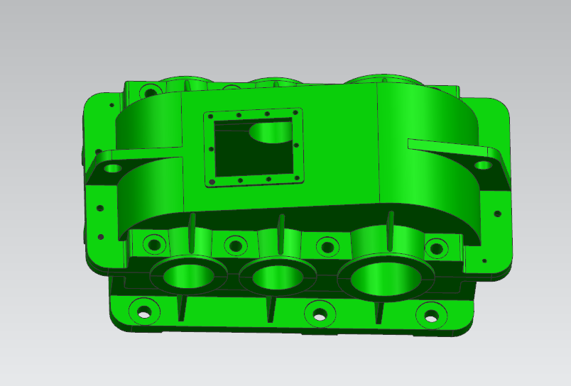

1.工作环境：清洁、平稳；T=2557.5N;P=4.8825Kw
2.nw=18.23r/min,传动比约为50-70，载荷平稳， 传动比大，选用开式齿轮传动。如图1：
1.电机选择：
型号:Y160M, 额定功率：7.5Kw，转速：970r/min；
2.轴的参数计算：
1、键：总共6个键，根据轴的直径查表11-28，材料为45钢；
2、联轴器： 高速轴：弹性联轴器LT5型号;
低速轴：可移式联轴器GIGL3/GIGLZ3;
3、滚动轴承：高速轴和中间轴选用7207C；
低速轴选用7211C；
1.高速轴齿轮：根据计算键槽底面到齿根的距离x<2.5m n，故选用齿轮轴；
2.高速轴齿轮：高速轴齿轮齿数少，啮合次数多，磨损快，为便于更换，设计成对称的双齿轮结构；
1.箱体设计：查表5-1及图5-1, 结构如图：  
2.附件的设计：
(1).视孔盖及窥视孔：查表14-4，14-9；
(2).油标尺：查表14-8；
(3).油螺塞及封油垫：查表14-15；
查各种表，完成零件图上的数据；